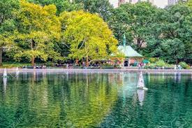

Photo by Randy Connolly This photo of Conservatory Pond in Central Park in New York City was taken on October 22,2011 with a Canon EOS 30D camera Conservatory Pond in central Park
Related Photos

Reviews
By Ricardo on September 15,2012 Easy on the HDR buddyBy Susan on October 1,2012 I Love Central Park